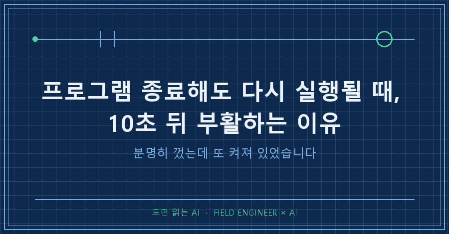
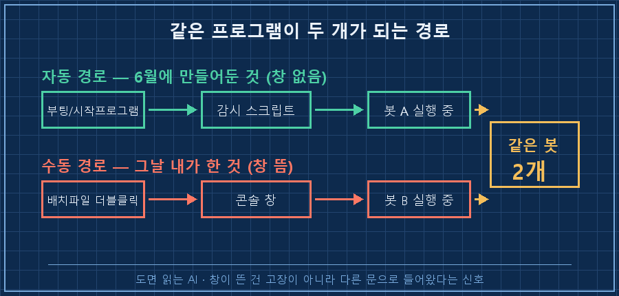
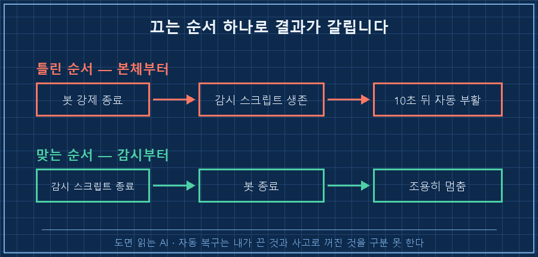
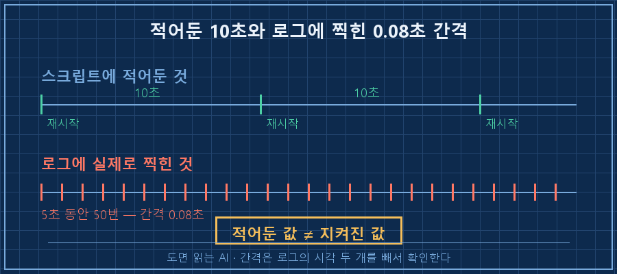

작업 관리자에서 프로세스를 끝냈는데, 잠깐 딴짓하고 돌아와서 보면 그게 또 떠 있었어요.
처음엔 제가 잘못 눌렀나 했습니다. 두 번째엔 좀 섬뜩했고요.
프로그램 종료해도 다시 실행된다면, 범인은 대개 그 프로그램이 아니에요.
옆에서 "얘가 죽었나" 지켜보다가 다시 켜주는 스크립트가 따로 돌고 있는 겁니다. 그래서 손댈 자리도 프로그램이 아니라 끄는 순서예요. 지켜보는 쪽을 먼저 끄고, 본체는 그 다음에 끕니다.
저는 십오 년째 자동화 설비 쪽에서 일합니다. 사람이 안 붙어 있어도 알아서 복구되는 물건을 만드는 게 밥벌이예요.
그 복구 장치를 손으로 만들어 파는 사람이, 정작 제 PC에서 그것 때문에 한참을 헤맸습니다..
2026년 8월, 윈도우 PC에서 있었던 일이에요. 개인적으로 만들어 쓰는 봇을 손보다가 벌어졌습니다.
1. 유일한 증상은 검은 창 하나였어요
그날 저는 봇 코드를 고치고 다시 띄웠습니다. 늘 쓰던 배치 파일을 더블클릭했어요.
그랬더니 검은 콘솔 창이 하나 떠서 안 사라지더라고요. 작업 표시줄에 계속 남아 있는 그 창이요.
거슬려서 물었습니다. "이 창은 원래 뜨는 건가?"
답을 찾다가 알았어요. 원래는 안 뜹니다. 두 달 전에 제가 만들어둔 정상 실행 경로는 창이 안 보이는 쪽이었거든요.
경로가 이렇게 생겼습니다.
시작프로그램(vbs) → 감시용 배치파일 → 봇 본체
(창 숨김) (죽으면 10초 뒤 재시작) (로그만 파일로)부팅하면 알아서 켜지고, 죽으면 알아서 다시 켜지고, 창은 안 보이고. 6월에 그렇게 만들어놓고 저는 그 사실을 까맣게 잊고 있었어요.
그러니까 그날 제가 한 일은 이미 돌던 봇 옆에 봇을 하나 더 띄운 것이었습니다. 창이 뜬 건 고장이 아니라, 평소와 다른 문으로 들어왔다는 신호였고요.

중복인지 확인하는 건 한 줄이면 됩니다. 윈도우 파워셸에서요.
Get-CimInstance Win32_Process -Filter "Name like 'python%'" | Select-Object ProcessId, CommandLine같은 스크립트 이름이 두 줄로 나오면 두 개 도는 겁니다. 저는 두 줄이었어요..
2. 본체만 죽이면 10초 뒤에 살아납니다
정리하려고 봇 프로세스를 죽였습니다. 그런데 조금 있다 보면 또 살아 있어요.
당연했습니다. 감시용 배치 파일이 이렇게 생겼거든요.
:loop
python -X utf8 bot.py >> bot.log 2>&1
timeout /t 10 /nobreak >nul
goto loop세 줄이 전부입니다. 봇을 실행하고, 봇이 끝나면 10초 쉬고, 다시 실행. 무한 반복이요.
얘 입장에서 제가 봇을 죽이는 건 "봇이 죽었다"와 구별이 안 됩니다. 그럼 시킨 대로 다시 켜죠. 정확히 10초 뒤에요.
자동 복구 장치는 내가 끄는 것과 사고로 꺼지는 것을 구분하지 못합니다. 이게 이 문제의 전부예요.
현장 설비도 똑같습니다. 자동 재기동이 걸린 펌프를 정지 버튼으로 세워봐야 잠시 뒤 다시 돕니다. 정비하려면 자동을 먼저 풀어야 하죠. 저는 그걸 매번 하면서도 제 PC에선 본체부터 죽이고 있었어요.
프로그램 종료해도 다시 실행되는 상황에서 힘으로 이기려는 게 제일 헛된 짓입니다. 강제 종료를 열 번 눌러도 상대는 열 번 다 되살립니다.

여기서 자주 막히는 것 세 가지
Q. 작업 관리자에서 끝내기를 눌렀는데 왜 소용이 없나요?
작업 관리자는 지금 떠 있는 프로세스만 봅니다. 그걸 다시 켜주는 쪽은 보통 cmd나 wscript 같은 다른 이름으로 떠 있어서 눈에 안 띄어요. 먼저 죽여야 할 건 그 다른 이름 쪽입니다.
Q. 감시 스크립트를 만든 기억이 없는데도 이런 일이 생기나요?
생깁니다. 윈도우 작업 스케줄러의 "실패 시 다시 시작" 옵션, 서비스 등록, 시작프로그램 폴더에 넣어둔 파일이 전부 같은 일을 해요. 저처럼 두 달 전의 자기 자신이 범인인 경우도 있고요.
Q. 그냥 감시 스크립트를 안 쓰면 되지 않나요?
그러면 봇이 새벽에 한 번 죽었을 때 아침까지 죽어 있습니다. 저는 그게 더 싫어서 감시 쪽을 남겼어요. 없애는 게 아니라 끄는 절차를 만드는 게 답입니다.
3. 끄는 순서를 파일 하나로 박아뒀어요
머리로 기억하면 다음에 또 틀립니다. 그래서 종료용 파일을 하나 만들었어요. 하는 일은 두 단계뿐입니다.
# 1) 감시 루프를 먼저 종료
Get-CimInstance Win32_Process -Filter "Name='cmd.exe'" |
Where-Object { $_.CommandLine -like '*start_bot.bat*' } |
ForEach-Object { Stop-Process -Id $_.ProcessId -Force }
# 2) 그 다음에 본체 종료
Get-CimInstance Win32_Process -Filter "Name like 'python%'" |
Where-Object { $_.CommandLine -like '*bot.py*' } |
ForEach-Object { Stop-Process -Id $_.ProcessId -Force }파일 맨 위에는 주석으로 이유를 적어뒀습니다. "감시 루프를 먼저 죽인다. 순서가 반대면 10초 뒤에 봇이 되살아난다."
이런 주석이 있어야 반년 뒤의 제가 순서를 안 바꿉니다. 오늘의 나보다 반년 뒤의 나를 못 믿는 편이 안전하더라고요!
켜는 쪽도 두 갈래로 정리했어요.
| 상황 | 쓰는 방법 | 창 |
|---|---|---|
| 평소 재시작 | 숨김 실행 스크립트 | 안 뜸 |
| 오류 볼 때 | 콘솔 배치 파일 | 뜸 |
평소엔 창 없는 쪽, 로그를 눈으로 봐야 할 때만 콘솔 쪽. 이 표를 만들고 나서야 "창이 떴다"가 경로 표시등으로 읽히기 시작했습니다. 여러분 PC에서 이유 없이 뜨는 창도 사실은 그런 표시등일지 몰라요.
4. 그리고 로그에서 10초가 0.08초였습니다
정리하고 로그를 되짚다가 이상한 구간을 봤어요. 재시작이 10초 간격이어야 하는데 이렇게 찍혀 있더라고요.
[2026-08-17 12:40:03.28] bot start
[2026-08-17 12:40:03.36] bot exited, restarting in 10s
[2026-08-17 12:40:03.37] bot start
[2026-08-17 12:40:03.44] bot exited, restarting in 10s
간격이 0.08초입니다. 이 구간을 다 세어보니 "10초 뒤 재시작"이라는 문구가 5초 동안 50번 지나갔더라고요.
창이 없는 환경에서 대기 명령이 그냥 통과된 것으로 추정하고 있습니다. 아직 안 팠어요. 이건 다음 숙제로 남겨뒀습니다.
다만 하나는 확실해졌어요. 로그에 적힌 "10초 뒤"는 제가 그렇게 적어둔 글자일 뿐, 실제로 10초를 쉬었다는 증거가 아니라는 것.
간격을 정해뒀다면 로그에서 시각 두 개를 빼보는 게 유일한 확인 방법입니다.
정리하면 이렇습니다. 프로그램 종료해도 다시 실행될 때 볼 곳은 세 군데예요. 나 말고 누가 켜주는지, 그 순서를 파일로 적어뒀는지, 그리고 적어둔 대기 시간이 실제로 지켜지는지.
다음 글에서는 이 봇이 긴 작업 중에 죽지 않도록 대기 시간 기준 자체를 바꾼 이야기를 적어볼게요.
제가 만든 것들을 어떻게 끄는지까지 적어두는 곳은 makefield.ai입니다.
태그: #프로그램종료해도다시실행 #자동재시작 #프로그램중복실행 #cmd창계속뜸 #프로세스종료방법 #윈도우자동실행 #배치파일 #워치독 #파이썬자동화 #무인자동화 #개인AI에이전트 #AI에게일시키기 #자동화설계 #현장엔지니어 #도면읽는AI